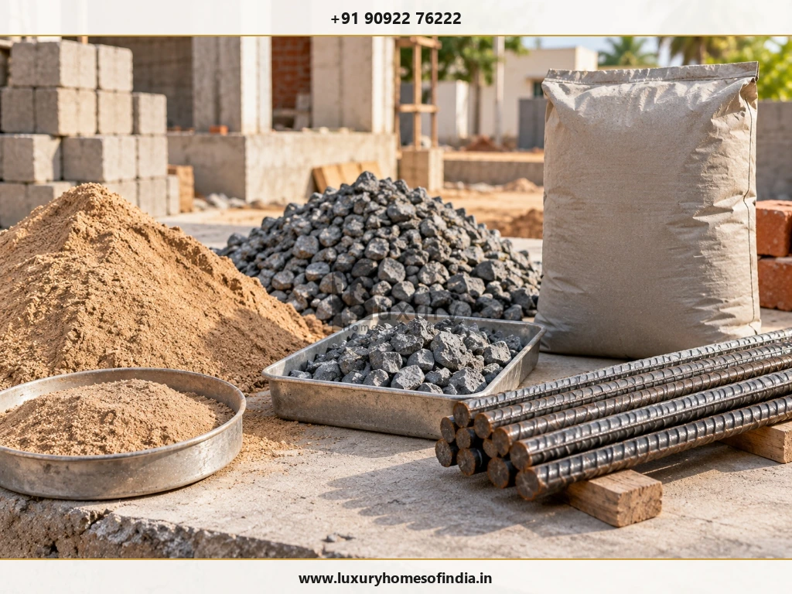

Construction cost increases in Chennai can affect homeowners when cement, steel, sand, electrical materials, plumbing products or other inputs become more expensive between estimating and procurement. The financial impact depends on the quantities still to be purchased, the project specifications, the construction stage and the terms of the contractor's agreement. Tamil Nadu market reports published in April and June 2026 documented price pressure across several construction-material categories, but they do not establish one universal percentage increase for every home. To understand the likely impact on your project, start with an itemised bill of quantities (BOQ), compare current supplier quotations against the original rates, and calculate the difference only for the work and materials still exposed to price changes. A clear scope, realistic contingency, planned procurement and written approval of variations can help you manage uncertainty without compromising structural safety or essential construction quality.
On-site cost review in Chennai: homeowner and civil engineer inspecting architectural blueprints and itemised budget sheets amidst active residential construction.
Why Are Construction Costs Increasing in Chennai?
Residential construction costs depend on materials, labour, transport, specifications, site conditions and the duration of the work. When several input costs rise together, the original estimate may no longer reflect the cost of completing the remaining work.
Market reporting in 2026 documented price increases across cement, steel, electrical wiring, PVC products and other materials amid supply pressures linked to regional and global logistics. Further reporting highlighted fluctuations in M-sand, P-sand and crushed stone aggregates across Tamil Nadu. These reports reflect broader market conditions and should be evaluated against verified local supplier quotations for your specific location.
For a homeowner, the important question is not simply whether market prices have risen. It is how much of your own approved construction budget is affected, and what can still be done to manage that exposure?
Key Material Categories Driving Cost Changes
1. Cement and Reinforcement Steel
Cement and reinforcement steel are primary cost drivers in residential structures. Changes in their prices can affect work that has not yet been procured, particularly where structural quantities are substantial.
The impact depends on the structural design, quantities, specified grades (e.g., Fe550D TMT, 53-grade OPC), supplier terms and the material already purchased or stored.
2. M-Sand, Plastering Sand and Aggregates
Sand and aggregates are used in different construction activities, including concrete, masonry and plastering, according to the applicable specification.
Price movements may reflect changes in quarry supply, transport regulations, seasonal availability and local market conditions. Reports of price movements in quarry zones should not automatically be treated as a uniform rate for every Chennai project.

Core civil materials on site: manufactured M-sand, graded blue metal aggregates, cement, and Fe550D ribbed reinforcement steel bars.
3. Electrical and Plumbing Materials
Electrical copper wiring, conduits, modular switches, CPVC/UPVC pipes, sanitary valves and drainage fittings contribute significantly to the MEP services budget. Changes in raw copper and polymer resins can affect these packages even when structural framing is largely complete.
Specifications matter. A comparison between two quotations is meaningful only when the products, brands, quantities and scope of supply are equivalent.
4. Labour, Transport and Project Duration
Labour expenditure depends on the trades involved, local skill availability, daily productivity and the construction schedule. Transport and site-access constraints (such as narrow residential lanes or restricted truck timings) can also affect delivered material costs.
Delays may introduce additional supervision, equipment rental or site security expenses, depending on the contract terms. However, a delay does not automatically entitle a contractor to claim rate revisions.
5. Finishes and Late Design Changes
Flooring, windows, doors, sanitaryware, paint, decorative lighting and bespoke interiors can produce substantial cost variations between residential projects.
A homeowner may spend significantly more by changing specifications after a quotation is approved, even when baseline material market prices have remained completely stable.
Construction Material Price Changes Reported in 2026
The following table summarises the categories and market contexts documented during 2026:
| Category | Market Reporting Context | Budget Implication |
|---|---|---|
| Cement and steel | Price pressure reported across Southern industrial hubs | Audit unpurchased structural quantities and verify mill rates |
| Electrical and plumbing materials | Raw material input pressure on copper wiring and polymer PVC | Review services allowances and lock in brand specifications |
| M-sand and P-sand | Quarry price variations and transportation adjustments in Tamil Nadu | Confirm current delivered rates with local aggregates suppliers |
| Aggregates & ready-mix concrete | Fuel and transport price changes affecting blue metal gravel | Recheck site-work, foundation, and slab concrete allowances |
How to Calculate the Effect on Your Construction Budget
The most reliable calculation focuses strictly on the materials and work packages that remain to be purchased or executed.
Practical budget audit: side-by-side BOQ quotation analysis comparing original contract rates against revised supplier quotes for remaining project work.
Additional Cost = Remaining Quantity × (Revised Rate − Original Rate)
Use consistent units and equivalent specifications. If a revised rate is lower than the original allowance, the calculation will correctly reflect a savings credit.
Worked Example
Suppose your original BOQ allows for 500 units of a particular material at ₹100 per unit. Before purchasing, you receive a revised supplier quotation of ₹110 per unit for the identical specification and delivery terms:
| Item | Calculation | Amount |
|---|---|---|
| Original allowance | 500 units × ₹100 | ₹50,000 |
| Revised cost | 500 units × ₹110 | ₹55,000 |
| Additional cost | ₹55,000 − ₹50,000 | ₹5,000 |
In this example, the price for that individual material increased by 10%. However, its overall impact on the total construction budget is only ₹5,000. If that material represents a modest share of the project, the overall budget increase is far smaller than the headline 10% figure suggests.
For a realistic assessment, calculate the net exposure for each remaining BOQ line item separately, then sum the differences. Check your agreement before assuming that every supplier price increase can be passed on to the homeowner.
Why Different Homes Experience Different Cost Increases
Two homes in Chennai can experience markedly different cost impacts, even when their built-up areas and room configurations are similar:
- Construction stage: A project that has already completed structural framing and procured cement/steel is completely insulated from later price rises in those categories.
- Specifications: Custom structural spans, expansive double-glazed fenestration, premium Italian marble, and bespoke joinery change the budget weighting compared to standard residential specifications.
- Quantity requirements: The financial impact of a rate change is directly proportional to the remaining unpurchased quantity.
- Procurement terms: Valid long-term supplier agreements or early price-lock clauses protect budgets against short-term market spikes.
- Site conditions: Restricted site access, narrow roads requiring smaller transport trucks, or high groundwater requiring continuous pumping create site-specific cost variations.
- Contract structure: A fixed-price turnkey agreement and a cost-plus or itemised rate contract allocate market price risks differently between builder and client.
- Design variations: Late client additions and plan modifications often increase expenditure far more than underlying market price inflation.
How to Protect Your House Construction Budget
Collaborative cost control: project manager and client reviewing material schedules, approved tile samples, and real-time expenditure trackers.
1. Update the Estimate Before Committing
If your quotation is several months old, request an itemised review identifying which rates remain valid and which have shifted. A revised estimate should document specific unit rate variations rather than applying arbitrary surcharges.
2. Review the BOQ Line by Line
Ensure the Bill of Quantities provides explicit clarity on units, quantities, brands, and labor scopes. Clearly define exclusions (e.g., compound wall, sump, EB charges) to avoid surprise expenses later.
3. Confirm Quotation Validity Periods
Always establish how long supplier prices remain valid (typically 15 to 30 days for steel and cement), payment schedules, and whether prices are contingent on minimum order quantities.
4. Coordinate Purchases With the Construction Schedule
Advance purchasing can lock in rates, but must be balanced against site storage limitations, weather exposure, theft risks, and cash flow constraints. Align major deliveries with immediate stage requirements.
5. Compare Equivalent Quotations
Ensure competing supplier quotes match identical grades, freight terms, unloading charges, and GST treatments. A seemingly lower quote often excludes transport or transit insurance.
6. Finalise Design Decisions Early
Decide on floor tiles, sanitary fixtures, doors, and electrical fittings before execution begins. Mid-construction changes cause costly rework, material wastage, and schedule delays.
7. Maintain a Dedicated Contingency Fund
Maintain an explicit contingency reserve (typically 5% to 10% of core construction costs) for genuine subsoil or structural uncertainties. Do not treat contingency as a substitute for an incomplete initial estimate.
8. Track Commitments as Well as Payments
Maintain a live ledger recording original estimates, purchase orders placed, payments disbursed, and pending liabilities. This prevents overcommitting funds before reaching critical finishing stages.
Fixed-Price Versus Variable-Price Construction Contracts
The construction agreement determines how parties handle price volatility, quantity variations, and project changes. A lower headline quote is not necessarily a more economical or predictable arrangement.
Contractual due diligence: evaluating escalation clauses, measurement rules, and variation mechanisms in residential building agreements.
| Contract Approach | Potential Benefit | What to Examine |
|---|---|---|
| Fixed-price agreement | Greater overall budget predictability for a clearly defined, frozen design scope. | Escalation clauses, explicit exclusion lists, and pricing formulas for client-requested variations. |
| Itemised rate agreement | Transparent unit rates with payment strictly reflecting measured work completed. | Standard measurement rules (IS 1200), treatment of revised market rates, and joint measurement protocols. |
| Cost-plus agreement | Complete transparency into actual procurement invoices and labour muster rolls. | Contractor management fee percentage, verification of trade discounts, and strict cost-control oversight. |
| Separate material & labour | Direct client control over bulk material sourcing and brand selection. | Delivery coordination, site storage safety, theft risks, on-site wastage, and labour idle-time claims. |
Before signing, clarify how the contract treats material price changes, statutory tax revisions, drawing amendments, delays, and product substitutions. For in-depth contract analysis, read our complete guide on what to include in a builder contract.
Should You Start Construction Now or Wait?
There is no universal answer based purely on material price trends. Delaying construction does not guarantee that prices will decline, and starting immediately does not guarantee that a project will remain strictly within its initial estimate.
Before deciding whether to break ground, verify the following readiness criteria:
- Architectural floor plans and structural engineering drawings are fully developed and coordinated.
- Applicable municipal approvals (CMDA / DTCP permits) and site soil reports are in place.
- The detailed project scope, specifications, and BOQ allowances are thoroughly documented in writing.
- A robust financing plan is secured to support uninterrupted stage-wise construction.
- The builder's quotation is current, with documented validity periods for major material inputs.
- The contract clearly outlines how price changes, variations, and milestone approvals will be handled.
- Material procurement schedules are synchronized with the site execution programme.
If your project is not yet fully planned, use the preparation period to resolve design details and specifications. A sound construction decision is based on project readiness, technical clarity, and budget affordability—not speculation on future raw material prices.
Reduce Costs Without Compromising Construction Quality
Cost control should focus on eliminating spatial waste, scope ambiguity, and design complexity—never on compromising structural integrity or building safety.
Practical Cost-Saving Strategies
- Optimising floor plans to eliminate redundant circulation corridors.
- Coordinating structural and MEP drawings before casting concrete.
- Standardising door and window sizes to benefit from bulk fabrication.
- Minimising on-site material wastage through accurate ordering.
- Prioritising essential infrastructure before luxury decorative additions.
Non-Negotiable Quality Protections
- Never reduce structural concrete grades (maintain M20/M25/M30).
- Never downgrade reinforcement steel from approved Fe550D designs.
- Never compromise foundation depth or subsoil recommendations.
- Never eliminate wet-area or terrace waterproofing membranes.
- Never cut corners on electrical earthing or circuit breaker ratings.
For additional proven cost-saving techniques, explore our practical guide on how to reduce house construction cost without compromising quality.
Homeowner's Construction Cost Review Checklist
Use this checklist before approving a contractor quotation or authorizing the next procurement milestone:
- Is the estimate based on current, dated supplier quotations?
- Are the BOQ quantities and specifications fully consistent with structural drawings?
- Are material supply and labour rates identified separately where appropriate?
- Are transport freight, unloading charges, and GST treatments clearly documented?
- Are external works (compound wall, sump & tank) explicitly included or excluded?
- Is the quotation validity period documented in writing?
- Does the contract clearly explain price revisions, escalation clauses, and variation procedures?
- Are key material and finish selections finalised wherever practical?
- Is the contingency reserve maintained separately from the baseline estimate?
- Are all approved design changes and variations documented in writing with cost impacts?
- Are payment milestones strictly tied to defined physical deliverables and inspections?
- Are purchase commitments and actual cash disbursements tracked separately?
Frequently Asked Questions
Plan Your Construction Budget With Greater Clarity
Construction cost changes are manageable when the initial estimate is transparent and decisions are documented systematically. A detailed BOQ, current supplier quotations, clearly defined contract terms and disciplined procurement help homeowners understand where their money is committed and where uncertainty remains.
At Luxury Homes of India, homeowners can explore custom residential architecture, structural engineering, and end-to-end turnkey construction services designed to ensure total financial and quality transparency.
Planning a Residential Project in Chennai?
Visit Luxury Homes of India to explore our custom residential construction practices. You can also review our comprehensive civil engineering and construction services, compare construction cost per square foot and quotation inclusions, learn about construction payment schedules, or contact our team directly to discuss your project requirements.
Direct Engineering Line: +91 90922 76222 | Email: info@luxuryhomesofindia.in
Design Studio: #85, 4th Floor, Lotus Tower, Guindy, Chennai – 600032